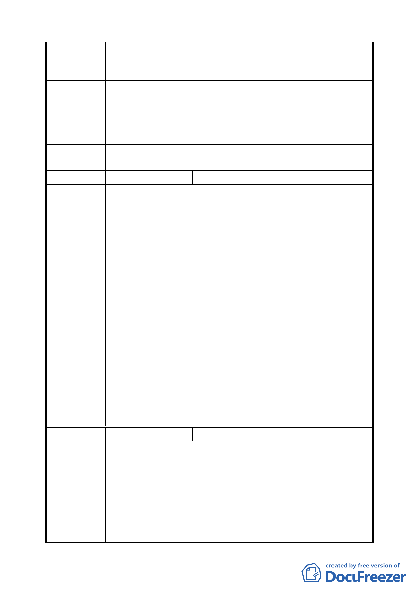

有礙都市發展，且該巷道確無此需。
二、另民共有之文林段一小段 101 地號，因致遠一路一段道
之打通及明德路的開闢，形成不規則的建地，規劃困難。
建議辦法
廢除本市北投區文林段三小段 522-2 及文林段一小段 101 地
號土地之細部計劃道路。
專案小組
結論
94.3.3 第 11 次專案小組結論：請發展局參考委員意見包含該
地區相同狀況、徵收、容積移轉、稅賦調整等內容綜合評估
後，本案提大會討論。
委員會議
決議
維持原都市計畫，有關民眾意見請市府另案處理。
編 號 11 陳情人 市府公園路燈工程管理處 94.9.14
一、經查北投 157 號綠地保留地位於北投區文林北路 80 巷 59
弄及 94 巷口，係屬本市北投石牌綠地系統 44 處之一，
依 65 年臺北市地形圖顯示當時本綠地即已作為當地居民
唯一出入通道及停車之主要巷道，周邊住宅林立，部分
建物以該巷道作為指定建築線核發執照，至 67 年公告劃
設為綠地用地後，歷經本市各項建設之快速發展，本綠
地更成為當地交通要道。
陳 情 理 由 二、考量上開綠地保留地發展現況已作既成巷道使用並顧及
目前停車需求，依都市計畫法第 26 條之規定：「...依據
發展情況，並參考人民建議作必要之變更。對於非必要
之公共設施用地，應變更其使用。」，又本處於 94 年 8
月 24 日召開府內研商會議，會中交通單位及區公所均表
示考量地區居民實際使用需求，建議擬續維持現況變更
道路用地，故本綠地宜循都市計畫變更為道路用地以符
管用合一。
建議辦法
建議擬續維持現況變更道路用地，故本綠地宜循都市計畫變
更為道路用地
委員會議
決議
同意發展局規劃仍維持綠地。
編 號 12 陳情人 張聰吉 94.9.19
一、從 65 年 7 月 8 日編定公告為綠地保留地，於 71 年 11 月
8 日及 79 年 12 月 7 日之主計畫及細部計劃通盤檢討，公
告為綠地保留地，在本次北投區通盤檢討，舉了 13 次會
陳情理由
議，都市計劃委員專家學者審查完畢通過，仍維持綠地
之需求。(以上四次檢討，經數百位專家學者，具有前膽
性及遠見評估案審查通過的)。
二、有關主辦研議：車輛出入口及形成巷道及停車問題變更
為道路用地，反對理由說明如下：
第 三九 頁，共 49 頁